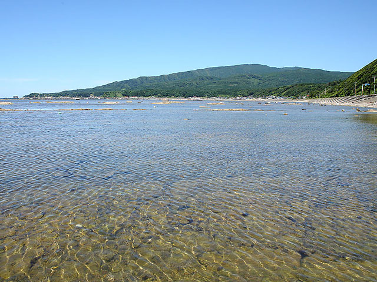
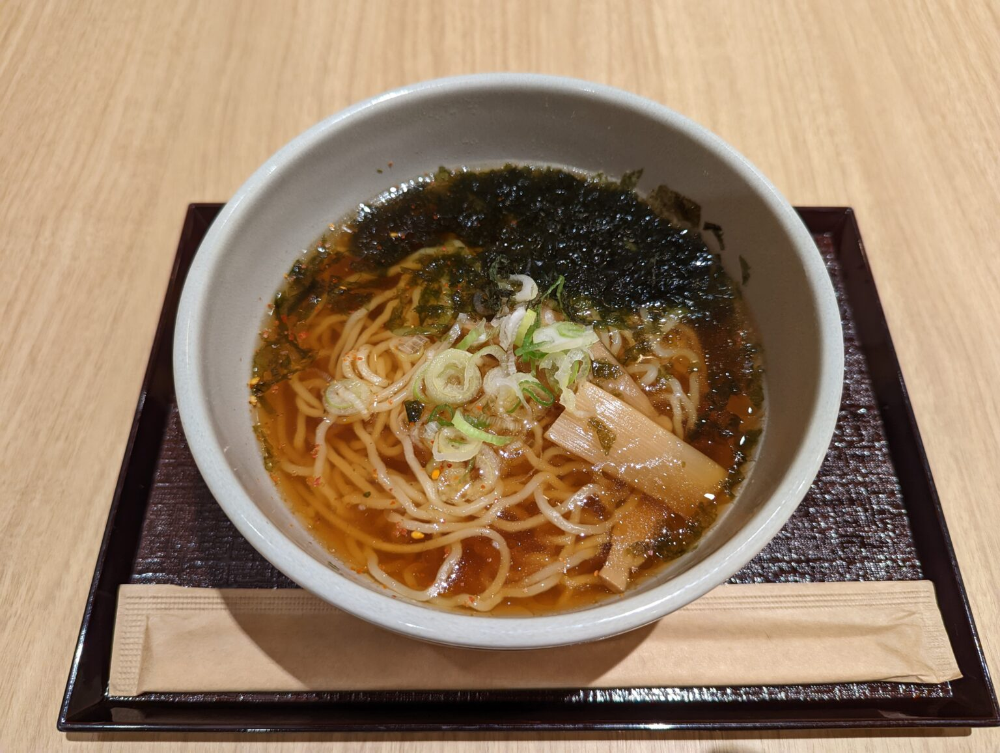
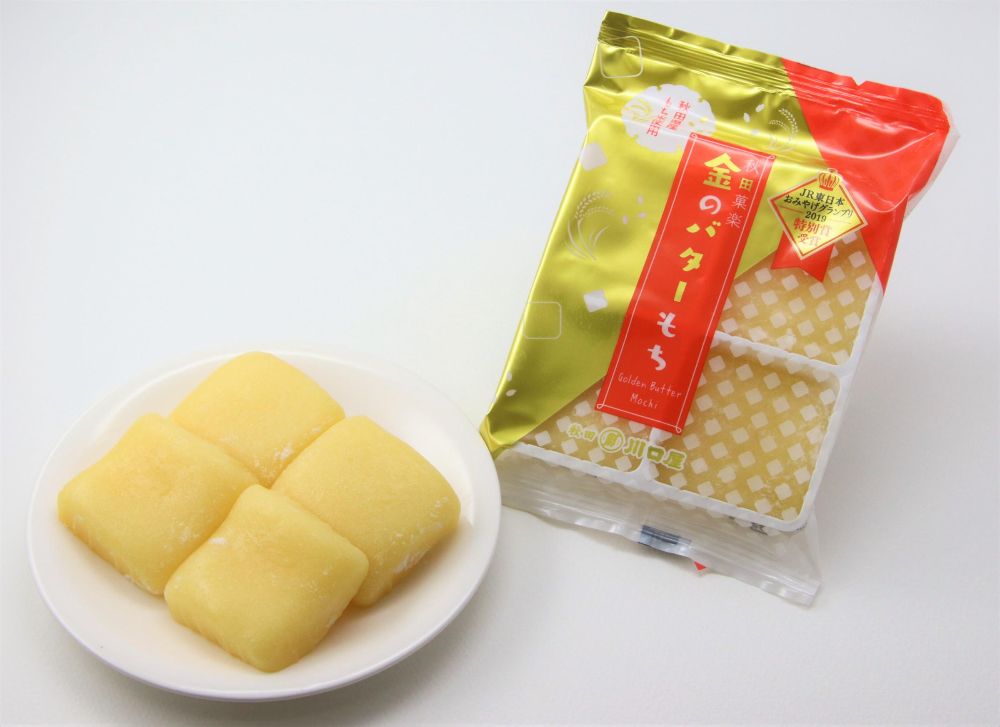

予約
なまはげシャトル(9月27日21:00まで！！)
ちゃわん屋9月27日18:00に予約済
行きたいところ・食べたいものリスト
ちゃわん屋
- 目的
- きりたんぽを食べる！
- 備考
- 定休日月曜
鵜ノ崎海岸
- 目的
- きれいな風景を見る！
- 備考
- 雨天中止

男鹿水族館GAO
- 目的
- ホッキョクグマのモモ太を見る！
- 備考
- エサの時間(豪太)13:30
ドーミーイン秋田
- 目的
- 夜鳴きそば食べる！
- 備考
- アイスも食べる

川口屋のバター餅
- 備考
- 秋田空港、秋田駅に売ってるらしい。

スケジュール
9.27（Sun）
-
8:37北18条駅 発備考：210円
-
8:41さっぽろ駅 着
-
8:48札幌駅 発備考：1,230円
-
9:26新千歳空港駅 着
-
11:35新千歳空港 発（ANA）備考：チケット共有するカルビーのポテトとアイスを食べる
-
12:40秋田空港 着
-
12:55 or 13:50リムジンバス秋田空港線備考：1,200円
-
13:35 or 14:30秋田駅 西口
-
15:00ドーミーイン秋田 チェックイン
-
夕方秋田駅付近を散策
-
18:00ちゃわん屋で夜ごはん
9.28（Mon） 男鹿観光
-
9:24秋田駅ダイヤ変更の可能性あり。要確認。備考：810円
-
10:16男鹿駅
-
11:00鵜ノ崎海岸鵜ノ崎海岸までの経路
-
12:00頃どこかでごはん
-
13:40男鹿駅発なまはげシャトル備考：1,600円
-
14:25男鹿水族館GAO
-
16:40男鹿水族館GAO 発なまはげシャトル備考：1,600円
-
17:40男鹿駅 着
-
18:05男鹿駅 発ダイヤ変更の可能性あり。要確認。備考：810円
-
18:56秋田駅 着
-
夜秋田市内でごはんその日の気分で決めよう
-
9:24秋田駅ダイヤ変更の可能性あり。要確認。備考：810円
-
10:16男鹿駅
-
10:30男鹿駅発なまはげシャトル備考：1,600円
-
11:15男鹿水族館GAOレストランあり
-
14:00男鹿水族館GAO 発なまはげシャトル備考：1,600円
-
14:50男鹿駅 着
-
15:38男鹿駅 発ダイヤ変更の可能性あり。要確認。備考：810円
-
16:37秋田駅 着
-
夜秋田市内でごはんその日の気分で決めよう
9.29（Tue）
-
11:00秋田駅西口 発リムジンバス秋田空港線備考：1,200円
-
11:40秋田空港 着
-
14:00秋田空港 発（ANA）
-
15:45新千歳空港 着
-
未定新千歳空港駅 発備考：1,230円
-
未定札幌駅 着
-
未定さっぽろ駅 発備考：210円
-
未定北18条駅 着